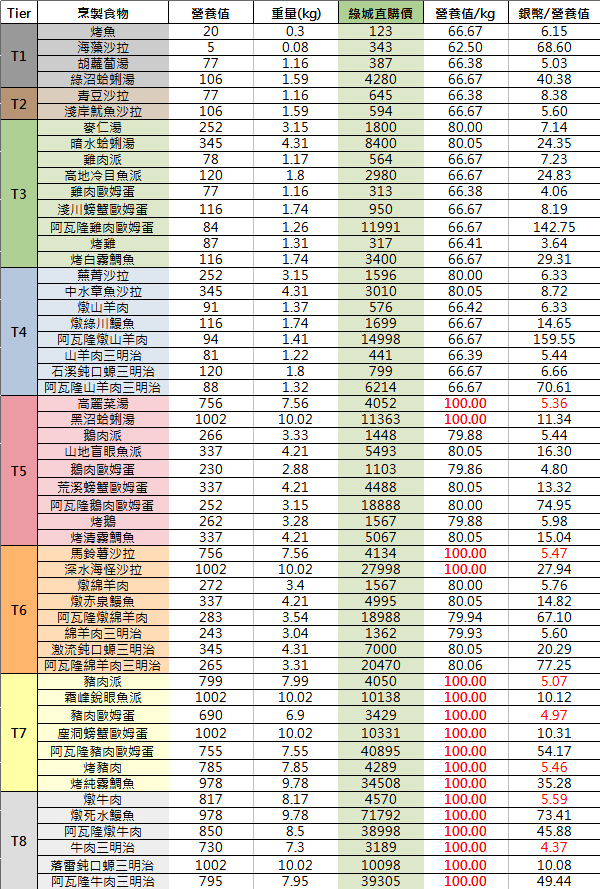

運送食物到地堡
單趟能運最多的營養值且花費最少的食物。
食物的價格、營養值與重量比較
- 食物價格為2023/01/13綠城直購價。
- 加了魚醬並不會增加營養值。(.0食物的營養值與.1/.2/.3食物相同)
- 營養值/kg越高越好，單趟能載更多營養值。
- 銀幣/營養值越低越好，營養值單價會越便宜。
計算
一般來說，運T8牛肉三明治最佳，不過可能因市場價格波動影響，或是你想自己煮。運量最高(100營養值/kg)、營養值單價比較便宜的7種食物做比較：
| 食物 | 價格 | 銀幣/營養值 |
| 高麗菜湯 |
|
- |
| 馬鈴薯沙拉 |
|
- |
| 豬肉派 |
|
- |
| 豬肉歐姆蛋 |
|
- |
| 烤豬肉 |
|
- |
| 燉牛肉 |
|
- |
| 牛肉三明治 |
|
- |
編輯紀錄
作者: runnywolf
最後編輯日期: 2023/1/13